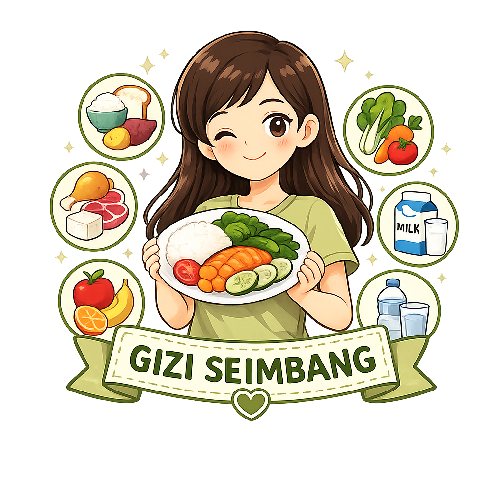

Gizi seimbang adalah susunan makanan sehari-hari yang mengandung zat gizi dalam jenis dan jumlah yang sesuai dengan kebutuhan tubuh. Gizi yang baik membantu remaja tumbuh sehat, aktif, berprestasi, dan mencegah berbagai penyakit, termasuk anemia.

Penuhi kebutuhan nutrisi agar tubuh sehat, kuat, dan siap menjalani aktivitas setiap hari.
Gizi seimbang adalah susunan pangan sehari-hari yang mengandung zat gizi dalam jenis dan jumlah yang sesuai dengan kebutuhan tubuh. (Novianti, 2019)
Pedoman Isi Piringku dari Kementerian Kesehatan membantu remaja memenuhi kebutuhan gizi seimbang setiap kali makan.
| Zat Gizi | Sumber Makanan | Manfaat |
|---|---|---|
| 🍚 Karbohidrat | Nasi, kentang, jagung, ubi | Sumber energi utama. |
| 🥩 Protein | Daging, ikan, telur, tempe, tahu | Membantu pertumbuhan dan perbaikan jaringan. |
| 🥛 Kalsium | Susu, yoghurt, keju | Menjaga kesehatan tulang dan gigi. |
| 🥬 Zat Besi | Bayam, hati ayam, daging merah | Mencegah anemia. |
| 🍊 Vitamin C | Jeruk, jambu biji, stroberi | Meningkatkan daya tahan tubuh dan membantu penyerapan zat besi. |
| 🥜 Lemak Sehat | Alpukat, kacang-kacangan, ikan | Menunjang fungsi otak dan hormon. |
Sarapan memberikan energi untuk memulai aktivitas dan membantu meningkatkan konsentrasi saat belajar.
Contoh menu sederhana yang memenuhi prinsip gizi seimbang.
Makan nasi membuat tubuh pasti gemuk.
Remaja yang kurus tidak perlu memperhatikan pola makan.
Minum suplemen vitamin dapat menggantikan makanan bergizi.
Berat badan dipengaruhi oleh jumlah kalori yang masuk dan aktivitas fisik, bukan hanya karena makan nasi.
Semua remaja, baik kurus maupun gemuk, tetap membutuhkan gizi seimbang agar tubuh tumbuh optimal.
Suplemen hanya pelengkap dan tidak dapat menggantikan makanan bergizi seimbang.
Pelajari pentingnya gizi seimbang untuk mendukung kesehatan dan prestasi remaja.
Unduh infografis Gizi Seimbang sebagai media belajar mandiri.
Download InfografisTubuh yang sehat dimulai dari kebiasaan makan yang baik. Tidak ada satu jenis makanan yang mengandung semua zat gizi, sehingga biasakan mengonsumsi makanan yang beragam, menjaga pola hidup aktif, tidur yang cukup, dan memantau berat badan secara berkala.